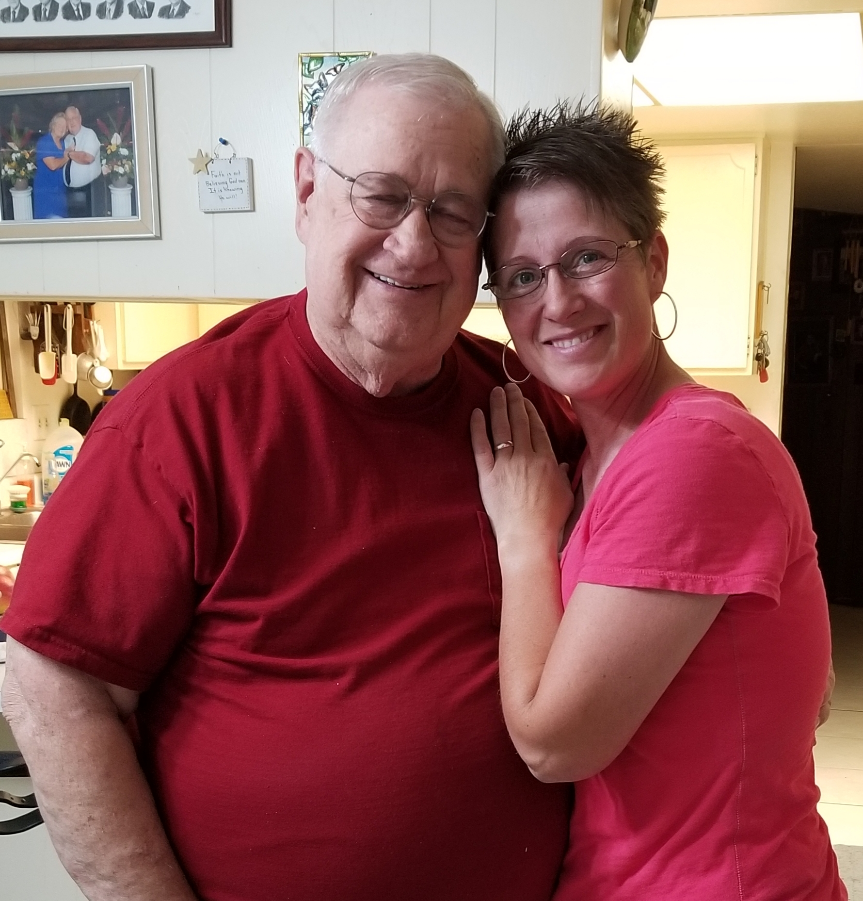

Deb Brown

Summary
It is never too late to set a goal and learn new skills. I have had a roundabout journey and variety of experiences up to this point. I am now at a stage where I have both the time and the desire to put all my acquired skills together, get more education, and seek a career.
Education
- High School Graduate 1995
- Eastern Arizona College 1995-96
- University of Pheonix 1997
- The Complete 2023 Web Development Bootcamp 2023
Work Experience
- Dunkin Donuts 1994-95 General customer service
- La Petite Academy 1996-98 Preschool teacher
- Chase Manhattan Bank 1998-99 Customer service call center representative
- White Sage Ranch 1999 General Ranch Hand
- CEO of home and family life 2001-current You name it, I am the one that makes it happen. Twenty-three years at any job is exceptional. Being a mom is the most challenging, demanding, and rewarding career I could ever have.
- Kanosh Mercantile 1999-2005 General customer service, cleaning and re-stocking the store, organizing and inventory.
- In home child care provider 2005-2008
- Fillmore Elementary School 2008-2009 Elementary teacher aid and substitute teacher.
- Guthrie Mainstream Services Supervisor of the Day Program for adults with developmental disabilities. Also care provider for at home clients.
- In home child care provider 2013-2020
- Utah Natural Meat 2021-current
- Meat Shop Manager
- Organize the daily running of the Meat Shop
- coordinate employee tasks and shifts
- maintain clean work space
- properly process the products
- reorder supplies
- prepare and package bulk order meat
- Farm Laborer
- Care for Dairy Cows
- Care for Pigs
- Care for horses
- Care for turkeys
- Care for calves
- Farm maitenance as needed
Skills
- Time management
- Team leadership
- Organization
- Communication
Notable Accomplishments
- I have completed this Capstone project!